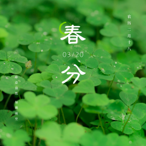
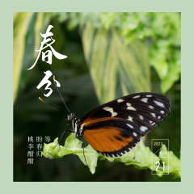
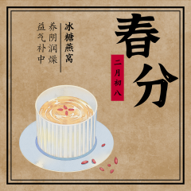

中国传统节日————春分
春分，是二十四节气之一，春季第四个节气。
斗指卯，太阳黄经达0°，于每年公历3月19-22日交节。
春分这天太阳直射赤道，南北半球昼夜平分，自这天以后太阳直射位置由赤道继续向北半球推移， 北半球各地白昼开始长于黑夜，南半球与之相反。
春分在天文学上有重要意义， 在气候上，也有比较明显的特征，春分后中国除青藏高原、 东北地区、西北地区和华北地区北部外均进入了明媚的春天。
  